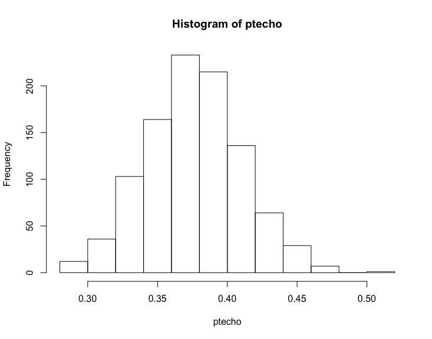

Capítulo 10 Incertidumbre en muestras de proporciones
El muestreo consiste en escoger los datos de algunos individuos de una población, llamada una muestra, para obtener información de toda la población a partir de ella. No es difícil darse cuenta que si tomo dos muestras de la misma población es muy poco probable obtener exactamente los mismos resultados. Incluso si los datos son poco problemáticos, lo hago perfectamente bien y no cometo ningún error, cada vez que tome una muestra obtendré resultados algo diferentes (cuánto más problemáticos sean los datos, más diferentes tenderán a ser). La estadística nos permite cuantificar la incertidumbre asociada a un muestreo bien hecho. Esto se hace a través de los llamados intervalos de confianza. Veamos cómo se calcula el intervalo de confianza de la proporción de individuos con alguna característica.
10.1 Una simulación
Empecemos por una simulación. Tenemos una población muy numerosa, potencialmente infinita, de la cual hay individuos con una cierta característica. Quizá la población es de caramelos y la característica es tener sabor de fresa; o la población es de personas y la característica es ser hinchas de la UD Porreres; o son tiros libres en baloncesto y la característica es entrar en la canasta. Tomar un individuo de la población y mirar si tiene o no la característica es llamado una prueba de Bernoulli. Si tiene la característica se dice que es un éxito y el no tenerla es un fracaso. Un muestreo de proporciones es una serie de pruebas de Bernoulli y nos interesa obtener la proporción de éxitos.
Vamos a hacer una simulación con R. Supongamos que tenemos una población muy grande de la que sabemos, porque así lo programamos, la proporción de individuos que tienen la característica. Representamos esta proporción de la población, deconocida, por la letra griega \(\theta\). Sea \(\theta = 0,38\) esta proporción: exactamente el 38% de nuestra población es hincha de la UD Porreres. Creamos 1000 muestras de 200 pruebas de Bernoulli cada una. Un «0» representa un fracaso y un «1» representa un éxito. Lo metemos en una matriz de 200 filas y 1000 columnas. Cada columna es una muestra. El código de R para hacer esto es el siguiente:
# La proporción
pr = 0.38
# 1000 muestras de 200 individuos
dt = sample(0:1, 200000, replace = T, prob = c(1-pr,pr))
muestreo = matrix(dt, nrow = 200, ncol = 1000)Calculamos la proporción de éxitos de cada prueba. Como astutamente los éxitos son «1» y los fracasos son «0», nos basta sumar las columnas y dividir por el tamaño de la muestra:
En estadística se pone un circunflejo (\(\hat{}\)) encima de una variable para indicar que es el valor medido en un muestreo de esa variable. Así, \(\theta\) es la proporción en una población, mientras que \(\hat{\theta}\), pronunciado zeta-gorro o zeta-techo, es la proporción que hemos medido en una muestra de la población. En nuestra simulación, el resultado del primer muestreo nos ha dado \(\hat{\theta} = 0.355\), el segundo \(\hat{\theta} = 0.350\), el tercero \(\hat{\theta} = 0.405\), etc. (recordemos que esta es una simulación con muestras aleatorias. Si ejecuta el mismo código obtendrá valores diferentes cada vez). Algunas veces obtenemos valores por debajo de \(\theta\), la proporción de toda la población, y otras veces están por encima. Esto lo vemos claramente en el histograma de los 1000 valores de \(\hat{\theta}\) de las 1000 muestras obtenidas que se muestra a continuación:

Estamos interesados en el rango del 90% central de los datos. Es decir eliminamos el 5% más bajo y el 5% más alto y miramos el rango de lo que nos queda. Para ello ordenamos los \(\hat{\theta}\) y miramos el que está en la posición 50 y 950. Para poder reutilizar el código, usamos unas variables que calculan las posiciones que tenemos que mirar para obtener este rango:
# Las ordenamos
zetatecho = sort(zetatecho)
# El 90% central
prob1 = 0.90
zetatecho[((1-prob1)/2)*1000]## [1] 0.325## [1] 0.435En esta simulación en concreto obtenemos que el rango está entre 0,325 y 0,435. Es decir que si escogemos una muestra de las 1000 al azar, tenemos una probabilidad del 90% de que esté entre estos dos valores. Podemos escribirlo como \[P[0,325 \leq \hat{\theta} \leq 0,435] = 0.9\]
Como hemos creado este mundo, conocemos \(\theta\). Esto nos permite reescribir la expresión como \[P[0,325 - 0,38 = 0,055 \leq \hat{\theta} - \theta \leq 0,435 - 0,38 = 0,055] = 0.9\] Y esto nos permite escribir \[P[ \hat{\theta} - 0,055 \leq \theta \leq \hat{\theta} + 0,055] = 0.9\]
Es decir, que si cogemos una muestra al azar y medimos la proporción de esta muestra, \(\hat{\theta}\), tenemos una probabilidad de \(0.9\) de que el valor de la población total esté \(0.055\) por encima o por debajo de este valor.
Podemos repetir esto con cualquier probabilidad que queramos. Por ejemplo 0.8 o 0.95:
## [1] 0.335## [1] 0.425## [1] 0.315## [1] 0.445En estos casos obtenemos que hay una probabilidad de 0.8 de que la proporción de la población total \(\theta\) esté en \([0.335, 0.425]\) o, lo que es lo mismo, en \(\hat{\theta}\pm 0,045\) (en esta simulación concreta. En otras variará un poco). Y una probabilidad de \(0.95\) de que esté en \([0.315, 0.445]\) o, lo que es lo mismo, en \(\hat{\theta}\pm 0,065\).
Es importantísimo no olvidar que esto son probabilidades. Hay un buen número de muestras, perfectamente hechas y perfectamente válidas, que están fuera de nuestra horquilla. Además, en nuevas simulaciones obtendríamos valores diferentes. Estamos cuantificando la incertidumbre. Esa es la palabra clave: incertidumbre. Y la cuantificamos, no la eliminamos.
10.2 Intervalos de confianza
En nuestra simulación, nuestra creación, conocíamos \(\theta\) y esto nos permitía calcular la horquilla. Pero el caso real es que no conocemos \(\theta\). Precisamente tomamos la muestra para saber algo de \(\theta\). Para poder rigurosamente saber algo de \(\theta\) a partir de \(\hat{\theta}\) necesitamos el razonamiento matemático que vamos a detallar.
Sea \(Y\) una variable aleatoria que es el resultado de una prueba de Bernoulli. \(Y = 1\) si la prueba es un éxito. Esto pasa con probabilidad \(\theta\). Si es un fracaso, \(Y = 0\), y esto pasa con probabilidad \(1 - \theta\). El valor esperado de \(Y\) es \(E[Y] = 1\cdot \theta + 0\cdot (1-\theta) = \theta\).
Tomamos una muestra de \(n\) elementos independientes: si un individuo posee o no la característica es independiente de todos los demás. La proporción de la muestra, \(\hat{\theta}\), es otra variable aleatoria: \[\hat{\theta} = \frac{Y + Y + \cdots + Y}{n}.\]
El valor esperado de \(\hat{\theta}\) es: \[E[\hat{\theta}] = E\left[\frac{Y + Y + \cdots + Y}{n}\right] = \frac{E[Y + Y + \cdots + Y]}{n} = \frac{n \, E[Y]}{n} = \frac{n\theta}{n} = \theta\]
Esto quiere decir que el valor medido, y conocido, \(\hat{\theta}\) va a estar alrededor de donde está nuestro desconocido \(\theta\). Es una buena noticia.
Calculemos ahora la desviación típica de \(\hat{\theta}\). La desviación típica de \(Y\), \(\mathrm{sd}(Y)\), la podemos calcular considerando que una prueba de Bernoulli sigue una distribución binomial con tamaño 1 y probabilidad \(\theta\). Por lo tanto \(\mathrm{sd}(Y) = \sqrt{\theta (1-\theta)}.\) Luego \[\begin{eqnarray*} \mathrm{sd}(\hat{\theta}) & = & \mathrm{sd}\left(\frac{Y + Y + \cdots + Y}{n}\right)\\ & = & \frac{\mathrm{sd}(Y + Y +\cdots +Y)}{n}\\ & = & \frac{\sqrt{\mathrm{sd}(Y)^{2} + \cdots + \mathrm{sd}(Y)^{2}}}{n}\\ & = & \frac{\sqrt{\theta(1-\theta) + \cdots + \theta(1-\theta)}}{n}\\ & = & \frac{\sqrt{n\theta(1-\theta)}}{n} \\ & = & \sqrt{\frac{\theta (1-\theta)}{n}} \end{eqnarray*}\]
Desgraciadamente esto no nos ayuda mucho. Hemos obtenido la desviación típica de \(\hat{\theta}\) en función del desconocido \(\theta\).
Para resolver este problema definimos un concepto importante: error estándar. Definimos el error estándar de \(\hat{\theta}\), \(\mathrm{se}(\hat{\theta})\), como \[\mathrm{se}(\hat{\theta}) = \sqrt{\frac{\hat{\theta} (1-\hat{\theta})}{n}}\]
Es decir, el error estándar tiene la misma expresión que la desviación típica, pero sustituyendo el desconocido \(\theta\) por el conocido \(\hat{\theta}\).
Para poder ahora saber algo de \(\theta\) a partir de \(\hat{\theta}\) entra uno de los teoremas más importantes de la estadística, el teorema central del límite. Este teorema nos dice que si tenemos muchas variables aleatorias idénticamente distribuidas, con cualquier distribución, y que son independientes una de otra, entonces la media de estas variables tiende a una distribución normal. A menudo se usa la sigla iid que significa «independientes e idénticamente distribuidas». Este teorema es fundamental para muchos resultados de estadística: para saber la distribución de la media de variables aleatorias, no tenemos que saber nada de la distribución de ellas. Eso sí, siempre y cuando las variables sean iid.
Volvamos a nuestro problema original. A partir del teorema central del límite se puede establecer que \[\frac{\hat{\theta} -\theta}{\mathrm{se(}\hat{\theta})} \leadsto \mathrm{N}(0, 1)\]
(«\(\leadsto \mathrm{N}(0,1)\)» se lee como «tiende a la distribución normal de media 0 y desviación típica 1»). Cuanto mayor es \(n\) más cerca está la distribución de \((\hat{\theta} -\theta)/\mathrm{se}(\hat{\theta})\) de la normal de media 0 y desviación típica 1.
Si lo pensamos un poco, esto lo podemos reescribir como \[\hat{\theta} \leadsto \mathrm{N}(\theta, \mathrm{se(}\hat{\theta})).\]
Sabiendo esto podemos recuperar la estrategia que usamos en la
simulación. Suponemos que \(n\) es lo suficientemente grande para que
podamos usar la normal N(0, 1) sin demasiado error. Como en la
simulación, nos interesa el rango del, digamos, 90% central de los
datos. “Quitamos” de N(0, 1) el 5% del extremo inferior y el 5%
del extremo superior. Esto lo podemos hacer con R con la función
qnorm(). La instrucción sería qnorm(0.05, 0, 1)
para el inferior y qnorm(0.95, 0, 1) para el superior. Los
valores que obtenemos son \(-1,645\) y \(1,645\). Ahora podemos escribir:
\[P[-1,645 \leq \frac{\hat{\theta} -\theta}{\mathrm{se(}\hat{\theta})} \leq 1,645] = 0.9\]
lo que con un poco de álgebra se convierte en: \[P[\hat{\theta}-1,645\,\mathrm{se(}\hat{\theta}) \leq \theta \leq \hat{\theta} + 1,645\,\mathrm{se(}\hat{\theta})] = 0.9.\]
Es decir que hay una probabilidad de 0,9 de que el valor de toda la población, esa desconocida \(\theta\), esté a 1,645 veces el error estandar por encima o por debajo del \(\hat{\theta}\), el valor medido en nuestra muestra. A este intervalo se le llama Intervalo de Confianza.
Naturalmente, podemos repetir esto para cualquier valor de probabilidad que nos interese. Lo hemos hecho con 0,9, pero lo podemos hacer con 0,8, 0,95, 0,7732… A esta probabilidad se le llama el nivel de confianza.
Un intervalo de confianza de proporciones a un nivel de confianza NC es el intervalo centrado en \(\hat{\theta}\) en el que se estima que estará la proporción de la población \(\theta\) con una probabilidad NC.
Algunas cuestiones a tener en cuenta:
Nadie asegura que \(\theta\) esté en el intervalo de confianza. Siempre hay una probabilidad de que esté fuera.
A la hora de calcular el intervalo estamos suponiendo que hemos tomado la muestra con todo rigor: de forma aleatoria, sin sesgos, etc. Si no es así, si la muestra está mal tomada, no significa que el intervalo es mayor, significa que no sabemos nada: puede ser mayor, puede ser menor, puede estar en otro lado.
Lo que hemos hecho en el fondo es una aproximación que es tanto mejor cuánto mayor es \(n\). Para valores de \(n\) pequeños la incertidumbre es mayor que lo que sale de este procedimiento.
Aunque no lo hemos mostrado, la incertidumbre también depende del valor de \(\hat{\theta}\). Si es muy cercano a 0 o a 1, tenemos un caso problemático, y necesitamos un valor muy muy grande de \(n\) para tener una aproximación aceptable.
Estamos suponiendo independencia: el que una prueba de Bernoulli dé un determinado valor (éxito o fracaso) no influye en los demás. Por eso en una encuesta no preguntamos a una pandilla de amigos. Hay muchos casos en el que no hay independencia. Por ejemplo, si llueve o no mañana no es independiente de si llueve o no hoy: es más probable que llueva mañana si llueve hoy que si hace sol. A veces no está nada claro: ¿depende el encestar un tiro libre de si se ha encestado o fallado el anterior?
Cuánto mayor es el nivel de confianza, mayor será el intervalo: si queremos estar más seguros que el valor de la población está en el intervalo, debemos hacerlo mayor.
10.3 Fuga de probabilidad
En algunos casos nos puede surgir un problema. Supongamos que
preguntamos en Palma a una muestra bien escogida de 100 personas si
son hinchas de la UD Porreres. Obtenemos 2 éxitos (son hinchas) y 98
fracasos (ellos se lo pierden). El valor de \(\hat{\theta}\) es 0.02.
Hacemos los cálculos para un nivel de confianza de 0.95. El error
estándar es
\[\mathrm{se} = \sqrt{\frac{0.02\cdot 0.98}{100}} = 0.014\]
Para un nivel de confianza de 0.95 hemos de multiplicar el error
estándar por un factor (obtenido con qnorm(0.975, 0, 1) de
1.96. El intervalo de confianza queda:
\[ [0.02 - 0.014\cdot 1.96, 0.02 + 0.014\cdot 1.96] = [-0.007, 0.047] \]
Nos ha dado una proporción negativa, lo que es imposible. No basta con cambiar el \(-0.007\) por un \(0\), el problema es más grave: estamos dando probabilidad a sucesos imposibles. Tenemos lo que se llama una fuga de probabilidad. Esto significa que el cálculo es incorrecto y, por lo tanto, el extremo superior de nuestro intervalo no es \(0.047\). Si nos encontramos ante esta situación podemos:
Indicar que no se puede calcular con precisión este intervalo de confianza (y tirar nuestros cálculos). Sólo podemos decir que la proporcion es pequeña. O grande, pues tenemos el mismo problema si es cercana a 1.
Si la fuga es pequeña, cambiar el extremo inferior por 0 (o el superior por 1 si estamos al otro extremo) e indicar que el intervalo de confianza es aproximado.
Repetir el experimento pero con un \(n\) mayor. Cuanto mayor es \(n\) más estrecho es el intervalo y menos fuga hay. Es por eso que si las proporciones están cerca de 0 o de 1 hemos de usar un valor de \(n\) más grande de lo que en principio podría parecer.
Usar otros métodos para calcular los intervalos de confianza (y cualquier otro cálculo de inferencia). Existen métodos específicos para problemas como este, pero no los explicaremos aquí.
10.4 Un ejemplo
En nuestro sistema de control de calidad hemos inspeccionado 83 circuitos y 54 se han calificado de «Cumplen especificaciones». ¿Cuál es el intervalo de confianza con un nivel de confianza del 90%?¿Y con un nivel de confianza del 95%?
Empecemos por calcular \(\hat{\theta}\). Han sido 54 éxitos de 83 intentos. Por lo tanto \[\hat{\theta} = 54/83 = 0.6506.\]
Calculemos a continuación el error estándar: \[\mathrm{se}(\hat{\theta}) = \sqrt{\frac{\hat{\theta} (1 - \hat{\theta})}{n}} = \sqrt{\frac{0.6506 (1 - 0.6506)}{83}} = 0.0523.\]
Ahora hemos de calcular el factor por el que hemos de multiplicar el
error estándar. Este factor depende del nivel de confianza. Usaremos
R. Llamamos nc a la variable con el nivel de confianza,
entonces podemos calcular los factores mediante la instrucción
qnorm((1+nc)/2). Notemos que los parametros de
qnorm() mean y sd tienen como valores por
defecto 0 y 1 respectivamente y por eso no es necesario introducirlos
y que basta calcular un valor, puesto que debido a la simetría de la
distribución normal, el otro valor es el de signo opuesto. Para
nc = 0,9 ya lo hemos calculado antes y sabemos que es 1,645.
Entonces el intervalo de confianza es
\[ [0.6506 - 1.645\cdot 0.0523,\; 0.6506 + 1.645\cdot 0.0523] = [0.565, \; 0.737].\]
Para un nivel de confianza del 95% lo único que cambia es el factor.
Con la función qnorm() calculamos el nuevo factor y es
1,956. El intervalo de confianza con este nuevo nivel de confianza es
\[ [0.6506 - 1.956\cdot 0.0523,\; 0.6506 + 1.956\cdot 0.0523] = [0.548, \; 0.753].\]
En resumen, hay una probabiliad de 0,9 que la proporción de la población esté en el intervalo [0.565, 0.737] y una probabilidad de 0.95 de que esté en [0.548, 0.753]. Y una probabilidad menor, pero que no hemos de olvidar, de que esté fuera de estos intervalos.
10.5 Resumen
Sea \(\theta\) la proporción de toda una población con una cierta característica. Tomamos una muestra de tamaño \(n\), suficeintemente grande. La muestra ha sido tomada con todo rigor. Llamamos \(\hat{\theta}\) a la proporción de la muestra con la característica.
Un intervalo de confianza de proporciones a un nivel de confianza NC es el intervalo centrado en \(\hat{\theta}\) en el que se estima que estará la proporción de la población \(\theta\) con una probabilidad NC.
Para calcular el intervalo de confianza debemos:
Calcular \(\hat{\theta}\);
Calcular el error estándar \[\mathrm{se}(\hat{\theta}) = \sqrt{\frac{\hat{\theta} (1-\hat{\theta})}{n}};\]
Determinar el nivel de confianza NC que queremos para nuestro intervalo;
Calcular el factor \(\mathit{fc}\) para este nivel de confianza. En R podemos usar la función
qnorm()}:fc = qnorm((1+nc)/2)};El intervalo de confianza para este nivel de confianza es \[ [\hat{\theta} - \mathit{fc}\cdot \mathrm{se}(\hat{\theta}), \; \hat{\theta} + \mathit{fc}\cdot \mathrm{se}(\hat{\theta})].\]
Si hay fuga de probabilidad, decidir qué se hace.